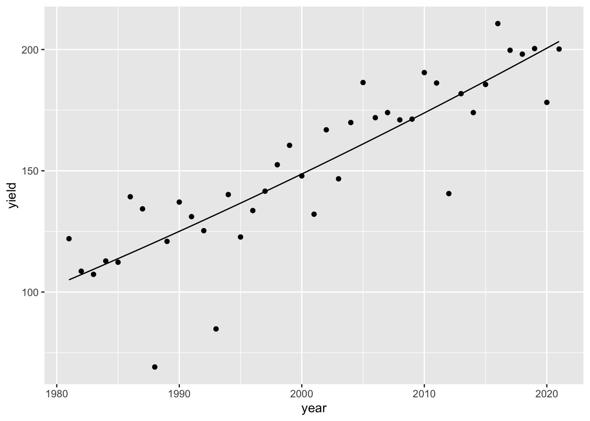
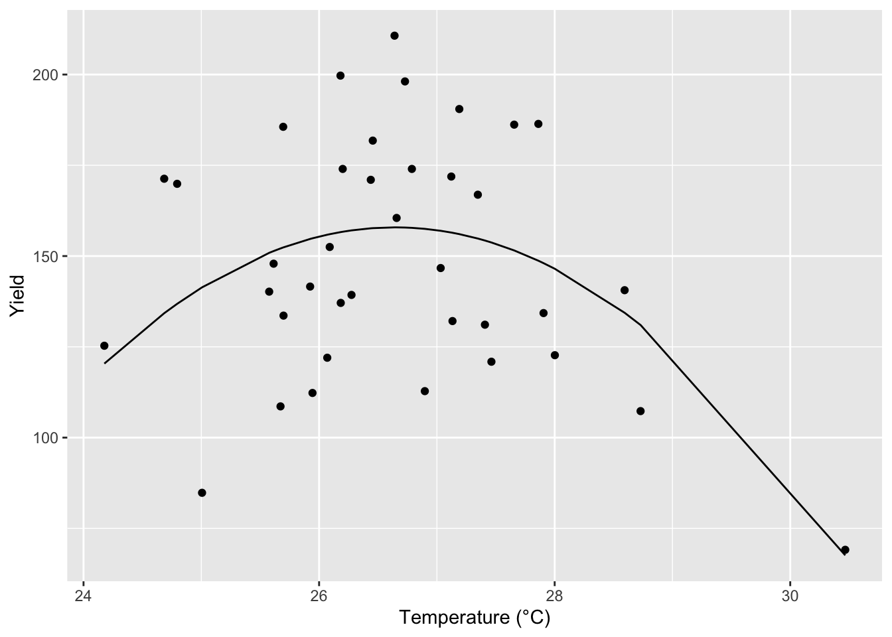
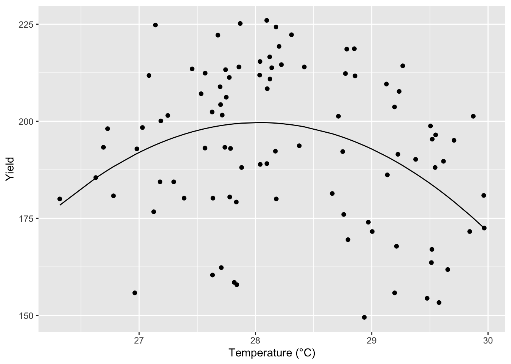
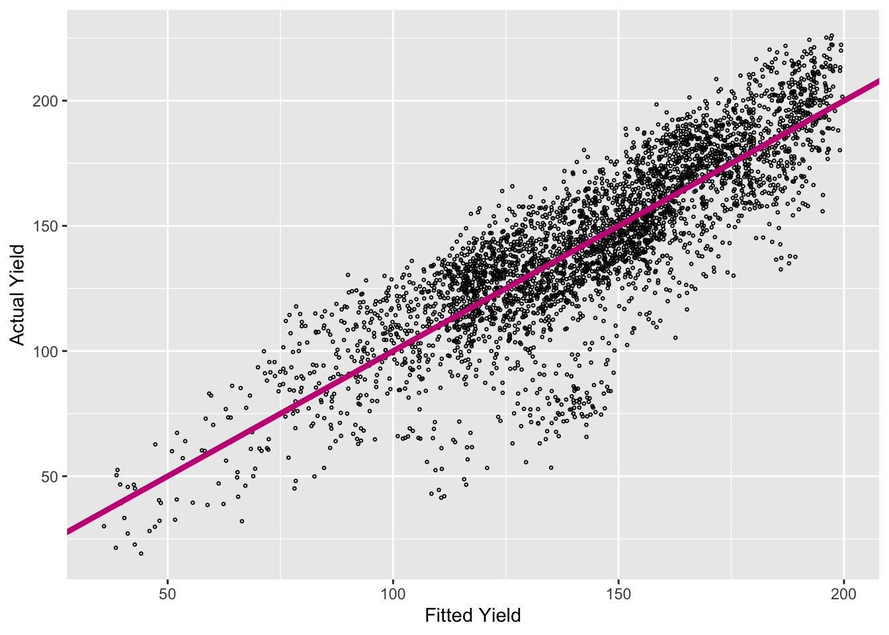
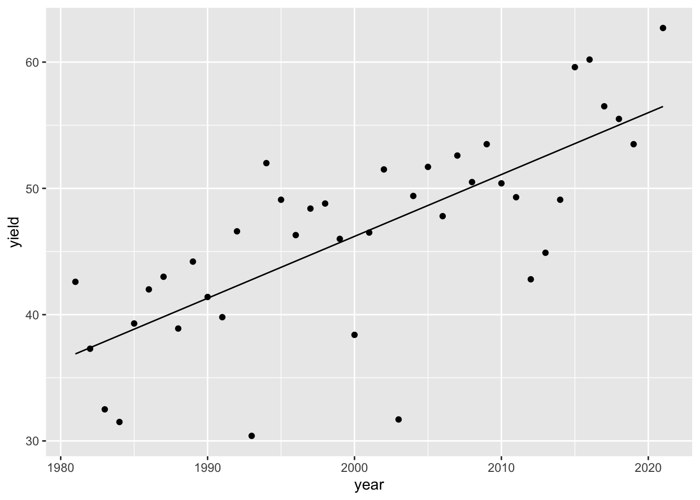

Chapter 7 Weather and Corn Yield Regressions
Investigating data using regressions.
7.1 Weather Data Analysis
Load the PRISM daily maximum temperatures
# daily max temperature
# dimensions: counties x days x years
prism <- readMat("data/prismiowa.mat")
# look at county #1
t_1981_c1 <- prism$tmaxdaily.iowa[1,,1]#county 1, all days, first year
t_1981_c1[366]## [1] NaNplot(1:366, t_1981_c1, type = "l")
ggplot() +
geom_line(mapping = aes(x=1:366, y = t_1981_c1)) +
theme_bw() +
xlab("day of year") +
ylab("daily maximum temperature (°C)") +
ggtitle("Daily Maximum Temperature, Iowa County #1")
# assign dimension names to tmax matrix. making the data easier to manipulate. dimnames creates list from dimensions (this data is 3D)
dimnames(prism$tmaxdaily.iowa) <- list(prism$COUNTYFP, 1:366, prism$years)
# converted 3d matrix into a data frame
tmaxdf <- as.data.frame.table(prism$tmaxdaily.iowa)
# relabel the columns
colnames(tmaxdf) <- c("countyfp","doy","year","tmax")
tmaxdf <- tibble(tmaxdf)7.2 Temperature trends
Summer temperature trends: Winneshiek County
tmaxdf$doy <- as.numeric(tmaxdf$doy)
tmaxdf$year <- as.numeric(as.character(tmaxdf$year))
winnesummer <- tmaxdf %>%
filter(countyfp==191 & doy >= 152 & doy <= 243) %>%
group_by(year) %>%
summarize(meantmax = mean(tmax))
ggplot(winnesummer, mapping = aes(x = year, y = meantmax)) +
geom_point() +
theme_bw() +
labs(x = "year", y = "Tmax (°C)") +
geom_smooth(method = lm) #trend line, linear model
lm_summertmax <- lm(meantmax ~ year, winnesummer) #LM(Responce(Y) ~Predictor (X))
summary(lm_summertmax)##
## Call:
## lm(formula = meantmax ~ year, data = winnesummer)
##
## Residuals:
## Min 1Q Median 3Q Max
## -2.5189 -0.7867 -0.0341 0.6859 3.7415
##
## Coefficients:
## Estimate Std. Error t value Pr(>|t|)
## (Intercept) 41.57670 36.44848 1.141 0.262
## year -0.00747 0.01823 -0.410 0.684
##
## Residual standard error: 1.232 on 36 degrees of freedom
## Multiple R-squared: 0.004644, Adjusted R-squared: -0.02301
## F-statistic: 0.168 on 1 and 36 DF, p-value: 0.6844Winter Temperatures - Winneshiek County
winnewinter <- tmaxdf %>%
filter(countyfp==191 & (doy <= 59 | doy >= 335) & !is.na(tmax)) %>%
group_by(year) %>%
summarize(meantmax = mean(tmax))
ggplot(winnewinter, mapping = aes(x = year, y = meantmax)) +
geom_point() +
theme_bw() +
labs(x = "year", y = "Tmax (°C)") +
geom_smooth(method = lm)
lm_wintertmax <- lm(meantmax ~ year, winnewinter)
summary(lm_wintertmax)##
## Call:
## lm(formula = meantmax ~ year, data = winnewinter)
##
## Residuals:
## Min 1Q Median 3Q Max
## -3.5978 -1.4917 -0.3053 1.3778 4.5709
##
## Coefficients:
## Estimate Std. Error t value Pr(>|t|)
## (Intercept) -29.87825 60.48100 -0.494 0.624
## year 0.01368 0.03025 0.452 0.654
##
## Residual standard error: 2.045 on 36 degrees of freedom
## Multiple R-squared: 0.005652, Adjusted R-squared: -0.02197
## F-statistic: 0.2046 on 1 and 36 DF, p-value: 0.65377.2.1 Multiple regression – Quadratic time trend
winnewinter$yearsq <- winnewinter$year^2
lm_wintertmaxquad <- lm(meantmax ~ year + yearsq, winnewinter)
summary(lm_wintertmaxquad)##
## Call:
## lm(formula = meantmax ~ year + yearsq, data = winnewinter)
##
## Residuals:
## Min 1Q Median 3Q Max
## -3.3539 -1.2985 -0.2813 1.4055 4.2620
##
## Coefficients:
## Estimate Std. Error t value Pr(>|t|)
## (Intercept) -1.086e+04 1.238e+04 -0.877 0.386
## year 1.085e+01 1.239e+01 0.876 0.387
## yearsq -2.710e-03 3.097e-03 -0.875 0.388
##
## Residual standard error: 2.051 on 35 degrees of freedom
## Multiple R-squared: 0.02694, Adjusted R-squared: -0.02867
## F-statistic: 0.4845 on 2 and 35 DF, p-value: 0.6201winnewinter$fitted <- lm_wintertmaxquad$fitted.values
ggplot(winnewinter) +
geom_point(mapping = aes(x = year, y = meantmax)) +
geom_line(mapping = aes(x = year, y = fitted)) +
theme_bw() +
labs(x = "year", y = "tmax")
7.3 Download NASS corn yield data
# set our API key with NASS
nassqs_auth(key = "90C60E94-62E7-3DCB-969E-9AD7E119703A")
# parameters to query on
params <- list(commodity_desc = "CORN", util_practice_desc = "GRAIN", prodn_practice_desc = "ALL PRODUCTION PRACTICES", year__GE = 1981, state_alpha = "IA")
# download
cornyieldsall <- nassqs_yields(params)
cornyieldsall$county_ansi <- as.numeric(cornyieldsall$county_ansi)
cornyieldsall$yield <- as.numeric(cornyieldsall$Value)
# clean and filter this dataset
cornyields <- select(cornyieldsall, county_ansi, county_name, yield, year) %>%
filter(!is.na(county_ansi) & !is.na(yield))
cornyields <- tibble(cornyields)7.4 Analysis
7.4.1 Extract Winneshiek County corn yields, fit a linear time trend, make a plot. Is there a significant time trend?
#extract county yeild
winneyield<- cornyields %>%
filter(county_ansi==191)
#linear trend
lm_winneyield <- lm(yield~year, winneyield)
summary(lm_winneyield)##
## Call:
## lm(formula = yield ~ year, data = winneyield)
##
## Residuals:
## Min 1Q Median 3Q Max
## -51.163 -1.841 2.363 9.437 24.376
##
## Coefficients:
## Estimate Std. Error t value Pr(>|t|)
## (Intercept) -4763.290 448.286 -10.63 4.46e-13 ***
## year 2.457 0.224 10.96 1.77e-13 ***
## ---
## Signif. codes: 0 '***' 0.001 '**' 0.01 '*' 0.05 '.' 0.1 ' ' 1
##
## Residual standard error: 16.97 on 39 degrees of freedom
## Multiple R-squared: 0.7551, Adjusted R-squared: 0.7488
## F-statistic: 120.2 on 1 and 39 DF, p-value: 1.767e-13winneyield$fitted <- lm_winneyield$fitted.values
#plot
ggplot(winneyield)+
geom_point(mapping= aes(x=year,y=yield))+
geom_line(mapping= aes(x=year, y=fitted))+
labs(x='year', y='yield')A:Looking at our p-value (1.767 e-13), there is evidence of a significant time trend. The estimated slope is an increase of 2.457 yield per year, and our adjusted R-squared value shows us that about 75% of the data fit this model.
7.4.2 Fit a quadratic time trend (i.e., year + year^2) and make a plot. Is there evidence for slowing yield growth?
winneyield$yearsq <-winneyield$year^2
lm_winneyield_quad <- lm(yield~ year+ yearsq, winneyield)
summary(lm_winneyield_quad)##
## Call:
## lm(formula = yield ~ year + yearsq, data = winneyield)
##
## Residuals:
## Min 1Q Median 3Q Max
## -51.384 -3.115 1.388 9.743 25.324
##
## Coefficients:
## Estimate Std. Error t value Pr(>|t|)
## (Intercept) 2.583e+04 8.580e+04 0.301 0.765
## year -2.812e+01 8.576e+01 -0.328 0.745
## yearsq 7.641e-03 2.143e-02 0.357 0.723
##
## Residual standard error: 17.17 on 38 degrees of freedom
## Multiple R-squared: 0.7559, Adjusted R-squared: 0.7431
## F-statistic: 58.84 on 2 and 38 DF, p-value: 2.311e-12winneyield$quadfitted <-lm_winneyield_quad$fitted.values
#plot
ggplot(winneyield)+
geom_point(mapping= aes(x=year,y=yield))+
geom_line(mapping= aes(x=year, y=quadfitted))+
labs(x='year', y='yield')
A: The p-value (2.311e-12) is less than alpha (0.05), indicating there is evidence of a relationship between years an yield growth. Based off the graph and our quadratic model, there is a slight slope of 7.641e-03, there is no evidence of a slowing yield growth.
7.4.3 Time Series
Let’s analyze the relationship between temperature and yields for the Winneshiek County time series. Use data on yield and summer avg Tmax. Is adding year or Tmax^2 to your model helpful? Make a plot and interpret the results.
#bringing summer temp into yield
winnecorn<-inner_join(winneyield,winnesummer)
#quatratic with temp
winnecorn$tempsq <-winnecorn$meantmax^2
lm_winnecorn_quad <- lm(yield~ meantmax+tempsq, winnecorn)
summary(lm_winnecorn_quad)##
## Call:
## lm(formula = yield ~ meantmax + tempsq, data = winnecorn)
##
## Residuals:
## Min 1Q Median 3Q Max
## -56.587 -22.262 -0.982 22.409 52.798
##
## Coefficients:
## Estimate Std. Error t value Pr(>|t|)
## (Intercept) -4223.604 1446.639 -2.920 0.00609 **
## meantmax 328.918 107.068 3.072 0.00410 **
## tempsq -6.173 1.979 -3.119 0.00362 **
## ---
## Signif. codes: 0 '***' 0.001 '**' 0.01 '*' 0.05 '.' 0.1 ' ' 1
##
## Residual standard error: 29.5 on 35 degrees of freedom
## Multiple R-squared: 0.2417, Adjusted R-squared: 0.1984
## F-statistic: 5.579 on 2 and 35 DF, p-value: 0.007887winnecorn$quadfitted <-lm_winnecorn_quad$fitted.values
#plot
ggplot(winnecorn)+
geom_point(mapping= aes(x=meantmax,y=yield))+
geom_line(mapping= aes(x=meantmax, y=quadfitted))+
labs(x='Temperature (°C)', y='Yield')
A: When adding a quadratic model that considers temperature, our p-value (0.007887) is less than alpha and we have evidence of a relationship. We can see that our yield is highest with and average temperature between 26-27 °C, and yield decrease with higher or lower than those temperatures. This model is beneficial for seeing the effects of temperature on yield, even though our r squared value is 0.198.
7.4.4 Cross-Section
Analyze the relationship between temperature and yield across all counties in 2018. Is there a relationship? Interpret the results.
#pulling out relevant temp
iowa_temp2018 <- tmaxdf %>%
filter(year==2018 & (doy >= 152 & doy <= 243) & !is.na(tmax)) %>%
group_by(countyfp) %>%
summarise(meantmax = mean(tmax))
#factor to numeric
iowa_temp2018$countyfp <- as.numeric(as.character(iowa_temp2018$countyfp))
#pulling yield data
yields2018 <-cornyields %>%
filter(year == 2018 & !is.na(yield)) %>%
rename(countyfp='county_ansi')
#combining data
iowa_2018 <- inner_join(iowa_temp2018,yields2018, by='countyfp')
#lm fit
iowa_temp_model <- lm(yield~meantmax, iowa_2018)
summary(iowa_temp_model)##
## Call:
## lm(formula = yield ~ meantmax, data = iowa_2018)
##
## Residuals:
## Min 1Q Median 3Q Max
## -42.983 -15.041 0.955 16.795 31.999
##
## Coefficients:
## Estimate Std. Error t value Pr(>|t|)
## (Intercept) 312.466 63.387 4.929 3.69e-06 ***
## meantmax -4.216 2.241 -1.882 0.0631 .
## ---
## Signif. codes: 0 '***' 0.001 '**' 0.01 '*' 0.05 '.' 0.1 ' ' 1
##
## Residual standard error: 19.64 on 91 degrees of freedom
## Multiple R-squared: 0.03745, Adjusted R-squared: 0.02687
## F-statistic: 3.541 on 1 and 91 DF, p-value: 0.06308iowa_2018$yieldfitted <-iowa_temp_model$fitted.values
#lm quadratic fit
iowa_2018$tempsq <-iowa_2018$meantmax^2
iowa_temp_quad_model <- lm(yield ~ meantmax + tempsq , iowa_2018)
summary(iowa_temp_quad_model)##
## Call:
## lm(formula = yield ~ meantmax + tempsq, data = iowa_2018)
##
## Residuals:
## Min 1Q Median 3Q Max
## -44.221 -15.399 5.007 14.541 30.879
##
## Coefficients:
## Estimate Std. Error t value Pr(>|t|)
## (Intercept) -5501.602 1860.830 -2.957 0.00397 **
## meantmax 406.789 131.493 3.094 0.00263 **
## tempsq -7.256 2.321 -3.126 0.00239 **
## ---
## Signif. codes: 0 '***' 0.001 '**' 0.01 '*' 0.05 '.' 0.1 ' ' 1
##
## Residual standard error: 18.75 on 90 degrees of freedom
## Multiple R-squared: 0.1317, Adjusted R-squared: 0.1124
## F-statistic: 6.827 on 2 and 90 DF, p-value: 0.001736iowa_2018$quadfitted <- iowa_temp_quad_model$fitted.values
#plot
ggplot(iowa_2018)+
geom_point(mapping= aes(x=meantmax,y=yield))+
geom_line(mapping= aes(x=meantmax, y=quadfitted))+
labs(x='Temperature (°C)', y='Yield')
A: Our linear model has a p-value of 0.06308 which is greater than alpha =0.05 and therefore there is no evidence of a relationship between yield and temperature between counties. However, when we ran a quadratic model, our p-value (0.001736) is less than alpha = 0.05, and our r squared is higher than the linear model. We see the highest yield had an average temperature between 27-29°C.
7.4.5 Panel
One way to leverage multiple time series is to group all data into what is called a “panel” regression. Convert the county ID code (“countyfp” or “county_ansi”) into factor using as.factor, then include this variable in a regression using all counties’ yield and summer temperature data. How does the significance of your temperature coefficients (Tmax, Tmax^2) change? Make a plot comparing actual and fitted yields and interpret the results of your model.
#filtering all counties summer temps
countysummer <- tmaxdf %>%
filter(doy >= 152 & doy <= 243) %>%
group_by(year,countyfp) %>%
summarize(meantmax = mean(tmax))
#converting county to factors
countysummer$countyfp <- as.factor(countysummer$countyfp)
#filtering yield for all counties and years
yields_all <-cornyields %>%
group_by(county_name) %>%
unique() %>% #ensures no data repeats
filter(!is.na(county_ansi)) %>%
rename(countyfp='county_ansi')
#converting county to factors
yields_all$countyfp <- as.factor(as.character(yields_all$countyfp))
#joining datasets
panel_data <- inner_join(yields_all,countysummer) %>%
unique()
#panel regression
panel_data$tempsq <- panel_data$meantmax^2
panel_lm <- lm(yield ~ countyfp + meantmax + tempsq + year , panel_data)
summary(panel_lm)##
## Call:
## lm(formula = yield ~ countyfp + meantmax + tempsq + year, data = panel_data)
##
## Residuals:
## Min 1Q Median 3Q Max
## -81.645 -9.720 1.924 13.232 40.409
##
## Coefficients:
## Estimate Std. Error t value Pr(>|t|)
## (Intercept) -5.826e+03 9.804e+01 -59.431 < 2e-16 ***
## countyfp101 5.352e-01 4.325e+00 0.124 0.901510
## countyfp103 4.380e+00 4.322e+00 1.013 0.310971
## countyfp105 7.730e+00 4.328e+00 1.786 0.074158 .
## countyfp107 2.203e+00 4.321e+00 0.510 0.610224
## countyfp109 1.222e+01 4.335e+00 2.819 0.004839 **
## countyfp11 7.186e+00 4.325e+00 1.661 0.096732 .
## countyfp111 1.779e+00 4.324e+00 0.411 0.680740
## countyfp113 6.415e+00 4.326e+00 1.483 0.138218
## countyfp115 7.330e+00 4.322e+00 1.696 0.089966 .
## countyfp117 -2.168e+01 4.381e+00 -4.949 7.81e-07 ***
## countyfp119 9.328e+00 4.325e+00 2.157 0.031063 *
## countyfp121 -2.587e+00 4.321e+00 -0.599 0.549390
## countyfp123 8.152e+00 4.321e+00 1.887 0.059302 .
## countyfp125 1.919e+00 4.321e+00 0.444 0.656948
## countyfp127 1.418e+01 4.326e+00 3.278 0.001055 **
## countyfp129 1.023e+01 4.385e+00 2.332 0.019741 *
## countyfp13 7.289e+00 4.329e+00 1.684 0.092303 .
## countyfp131 7.285e+00 4.352e+00 1.674 0.094242 .
## countyfp133 7.987e-01 4.321e+00 0.185 0.853378
## countyfp135 -1.585e+01 4.350e+00 -3.643 0.000273 ***
## countyfp137 5.885e+00 4.322e+00 1.362 0.173381
## countyfp139 8.283e+00 4.321e+00 1.917 0.055337 .
## countyfp141 1.423e+01 4.328e+00 3.288 0.001018 **
## countyfp143 8.743e+00 4.337e+00 2.016 0.043890 *
## countyfp145 -3.674e-01 4.322e+00 -0.085 0.932261
## countyfp147 7.261e+00 4.330e+00 1.677 0.093601 .
## countyfp149 7.352e+00 4.322e+00 1.701 0.089007 .
## countyfp15 1.498e+01 4.323e+00 3.466 0.000534 ***
## countyfp151 1.150e+01 4.326e+00 2.659 0.007880 **
## countyfp153 1.403e+01 4.321e+00 3.247 0.001178 **
## countyfp155 1.127e+01 4.350e+00 2.590 0.009627 **
## countyfp157 1.055e+01 4.322e+00 2.441 0.014702 *
## countyfp159 -2.070e+01 4.321e+00 -4.792 1.72e-06 ***
## countyfp161 9.390e+00 4.326e+00 2.170 0.030050 *
## countyfp163 1.628e+01 4.323e+00 3.765 0.000169 ***
## countyfp165 7.673e+00 4.323e+00 1.775 0.075966 .
## countyfp167 1.558e+01 4.323e+00 3.603 0.000318 ***
## countyfp169 1.122e+01 4.325e+00 2.593 0.009543 **
## countyfp17 1.133e+01 4.332e+00 2.615 0.008966 **
## countyfp171 9.740e+00 4.325e+00 2.252 0.024387 *
## countyfp173 -1.404e+01 4.350e+00 -3.228 0.001256 **
## countyfp175 -1.155e+01 4.350e+00 -2.655 0.007967 **
## countyfp177 -5.278e+00 4.329e+00 -1.219 0.222881
## countyfp179 -3.220e+00 4.351e+00 -0.740 0.459267
## countyfp181 -2.159e+00 4.321e+00 -0.500 0.617309
## countyfp183 1.042e+01 4.321e+00 2.410 0.015981 *
## countyfp185 -2.189e+01 4.350e+00 -5.033 5.07e-07 ***
## countyfp187 1.421e+01 4.326e+00 3.285 0.001029 **
## countyfp189 8.236e+00 4.344e+00 1.896 0.058035 .
## countyfp19 7.651e+00 4.334e+00 1.765 0.077577 .
## countyfp191 4.567e+00 4.350e+00 1.050 0.293826
## countyfp193 2.799e+00 4.321e+00 0.648 0.517252
## countyfp195 6.123e+00 4.356e+00 1.406 0.159892
## countyfp197 1.156e+01 4.329e+00 2.669 0.007634 **
## countyfp21 8.640e+00 4.328e+00 1.996 0.045974 *
## countyfp23 9.089e+00 4.327e+00 2.100 0.035779 *
## countyfp25 1.039e+01 4.326e+00 2.401 0.016400 *
## countyfp27 9.666e+00 4.323e+00 2.236 0.025421 *
## countyfp29 6.145e+00 4.321e+00 1.422 0.155092
## countyfp3 -4.527e+00 4.321e+00 -1.048 0.294839
## countyfp31 1.579e+01 4.324e+00 3.651 0.000264 ***
## countyfp33 4.582e+00 4.338e+00 1.056 0.290980
## countyfp35 1.390e+01 4.325e+00 3.213 0.001325 **
## countyfp37 2.169e+00 4.341e+00 0.500 0.617274
## countyfp39 -2.404e+01 4.350e+00 -5.527 3.48e-08 ***
## countyfp41 6.611e+00 4.329e+00 1.527 0.126809
## countyfp43 8.864e+00 4.337e+00 2.044 0.041033 *
## countyfp45 1.055e+01 4.325e+00 2.439 0.014756 *
## countyfp47 6.528e+00 4.324e+00 1.510 0.131221
## countyfp49 1.081e+01 4.321e+00 2.502 0.012386 *
## countyfp5 2.716e+00 4.343e+00 0.625 0.531743
## countyfp51 -1.457e+01 4.352e+00 -3.349 0.000820 ***
## countyfp53 -1.603e+01 4.350e+00 -3.686 0.000232 ***
## countyfp55 9.423e+00 4.338e+00 2.172 0.029916 *
## countyfp57 1.050e+01 4.321e+00 2.429 0.015186 *
## countyfp59 2.906e+00 4.336e+00 0.670 0.502836
## countyfp61 9.795e+00 4.340e+00 2.257 0.024059 *
## countyfp63 7.232e+00 4.340e+00 1.666 0.095754 .
## countyfp65 7.319e+00 4.341e+00 1.686 0.091905 .
## countyfp67 4.791e+00 4.334e+00 1.106 0.269008
## countyfp69 1.131e+01 4.330e+00 2.612 0.009035 **
## countyfp7 -1.828e+01 4.350e+00 -4.203 2.70e-05 ***
## countyfp71 1.358e+01 4.330e+00 3.136 0.001726 **
## countyfp73 1.462e+01 4.321e+00 3.382 0.000727 ***
## countyfp75 1.151e+01 4.328e+00 2.659 0.007863 **
## countyfp77 3.379e+00 4.321e+00 0.782 0.434297
## countyfp79 1.315e+01 4.324e+00 3.042 0.002370 **
## countyfp81 8.706e+00 4.340e+00 2.006 0.044917 *
## countyfp83 1.395e+01 4.326e+00 3.225 0.001271 **
## countyfp85 6.891e+00 4.321e+00 1.595 0.110834
## countyfp87 5.280e+00 4.321e+00 1.222 0.221864
## countyfp89 9.433e-01 4.364e+00 0.216 0.828875
## countyfp9 5.068e+00 4.323e+00 1.172 0.241144
## countyfp91 9.881e+00 4.334e+00 2.280 0.022661 *
## countyfp93 1.186e+01 4.325e+00 2.743 0.006124 **
## countyfp95 7.214e+00 4.322e+00 1.669 0.095161 .
## countyfp97 -1.386e+00 4.330e+00 -0.320 0.748823
## countyfp99 1.440e+01 4.322e+00 3.332 0.000871 ***
## meantmax 1.182e+02 6.108e+00 19.352 < 2e-16 ***
## tempsq -2.225e+00 1.085e-01 -20.503 < 2e-16 ***
## year 2.203e+00 2.836e-02 77.664 < 2e-16 ***
## ---
## Signif. codes: 0 '***' 0.001 '**' 0.01 '*' 0.05 '.' 0.1 ' ' 1
##
## Residual standard error: 18.83 on 3646 degrees of freedom
## Multiple R-squared: 0.7207, Adjusted R-squared: 0.7129
## F-statistic: 93.13 on 101 and 3646 DF, p-value: < 2.2e-16panel_data$fitted <- panel_lm$fitted.values
#plot
ggplot(panel_data)+
geom_point(mapping= aes(x=fitted, y=yield), shape=1, size=0.5)+
geom_abline(color= "mediumvioletred", size= 1.5)+
labs(x= "Fitted Yield", y= "Actual Yield")
A: The significance of the temperature coefficients (meantmax and tempsq) can be determined using the p-value. In this model, both values are smaller than 2e-16, so we cannot determine if there is a change between the two temperature coefficients. When comparing the actual and fitted yields, we have evidence of a relationship due to the p-value being 2.2e-16, less than alpha= 0.05. Having an r-squared value that fits 71% of the data shows us that all of the independent variables support this model.
7.5 Further Exploration
Download NASS data on soybean yields and explore either a time series relationship for a given county, the cross-sectional relationship for a given year, or a panel across all counties and years.
# parameters to query
params2 <- list(commodity_desc = "SOYBEANS", statisticcat_desc = "YIELD", prodn_practice_desc = "ALL PRODUCTION PRACTICES", year__GE = 1981, state_alpha = "IA")
# downloading the data (using nathan's code)
soybean_yields_all <- nassqs_yields(params2)
soybean_yields_all$county_ansi <- as.numeric(soybean_yields_all$county_ansi)
soybean_yields_all$yield <- as.numeric(soybean_yields_all$Value)
# clean and filter dataset
soybean_yields <- select(soybean_yields_all, county_ansi, county_name, yield, year) %>%
filter(!is.na(county_ansi) & !is.na(yield))
soybean_yields <- tibble(soybean_yields)
#extract a county yeild
Buena_Vista_yield<- soybean_yields %>%
filter(county_ansi==21)
#linear trend
lm_bv_yield <- lm(yield~year, Buena_Vista_yield)
summary(lm_bv_yield)
Buena_Vista_yield$fitted <- lm_bv_yield$fitted.values
#plot
ggplot(Buena_Vista_yield)+
geom_point(mapping= aes(x=year,y=yield))+
geom_line(mapping= aes(x=year, y=fitted))+
labs(x='year', y='yield')